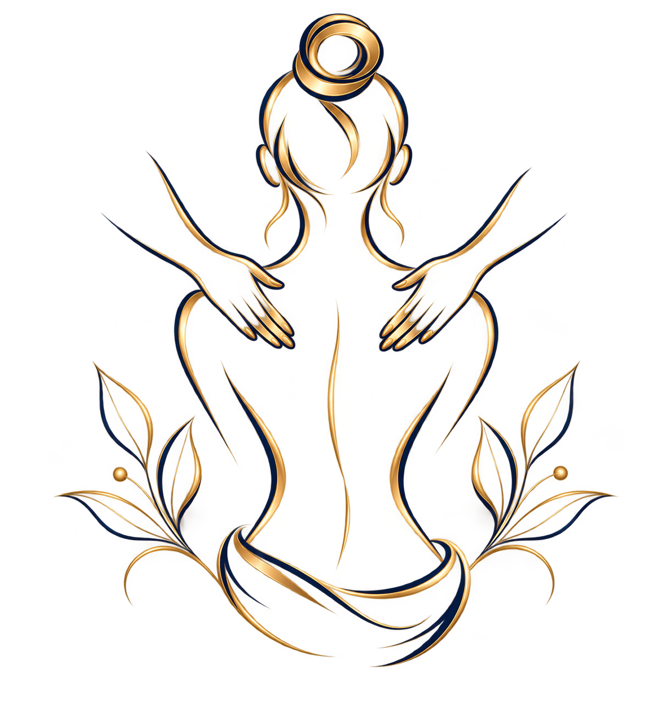
Массаж классический
Базовая работа с телом в спокойном темпе. Подходит для расслабления и регулярного ухода за собой.
Когда усталость и напряжение накапливаются, телу необходимо внимание и время для себя. Ваш массаж - место, где можно остановиться, выдохнуть и выбрать формат массажа, который соответствует вашему состоянию и желаниям.
Записаться онлайн ✦
Базовая работа с телом в спокойном темпе. Подходит для расслабления и регулярного ухода за собой.
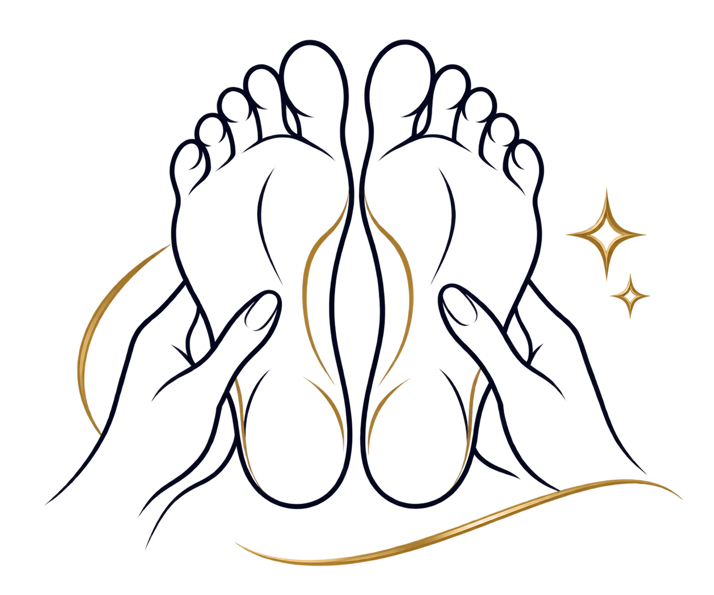
Формат для ног и стоп, когда хочется уделить особое внимание этой зоне и ощущению лёгкости.
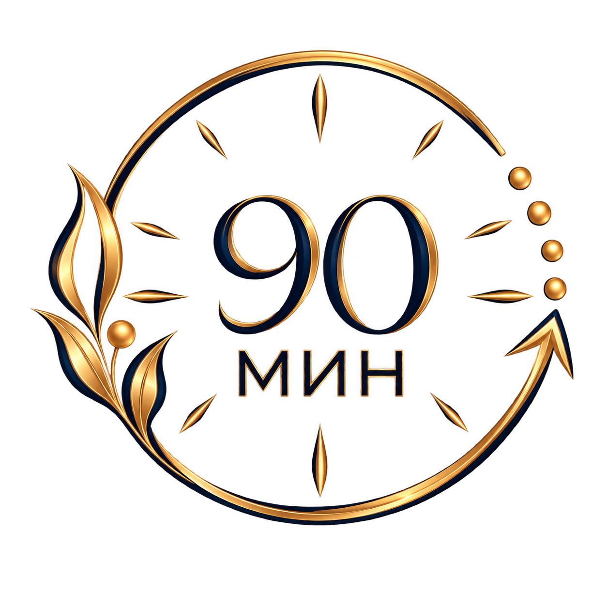
Продолжительный формат для полноценного сеанса и спокойного ухода за всем телом.
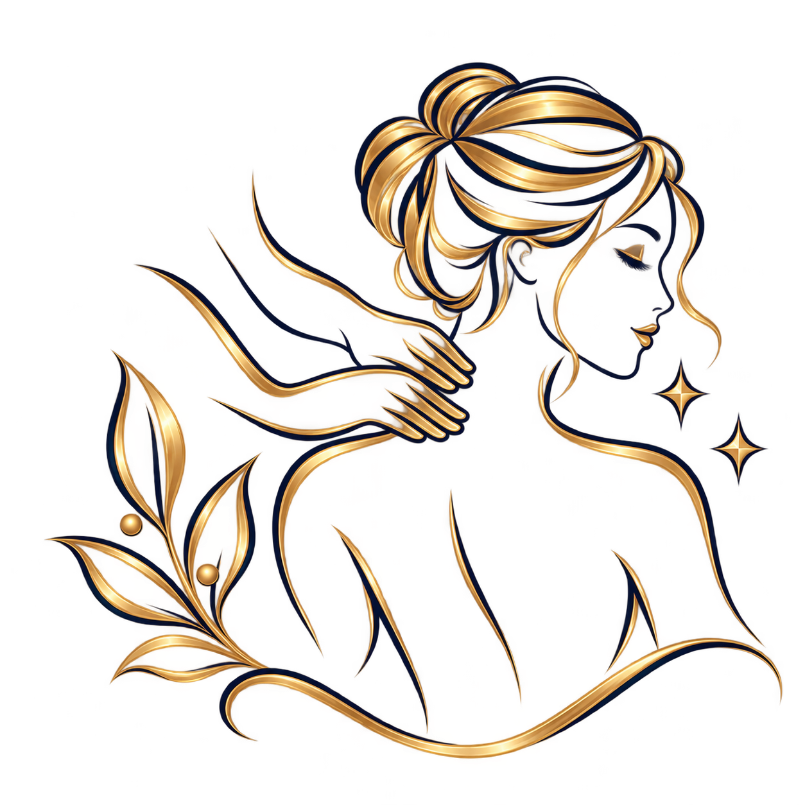
Расслабляющая работа с зоной шеи и плеч. Особенно приятный вариант после долгого рабочего дня.
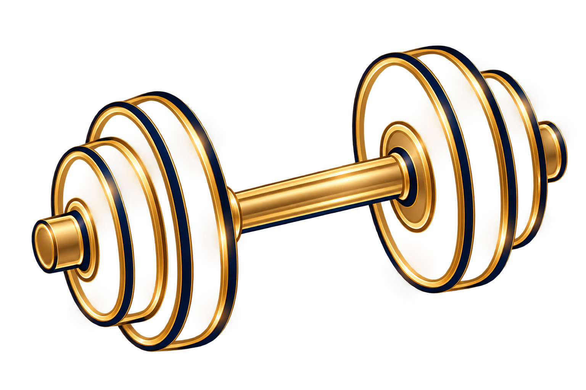
Формат для тех, кто регулярно занимается физической активностью и хочет уделять внимание телу после нагрузок.
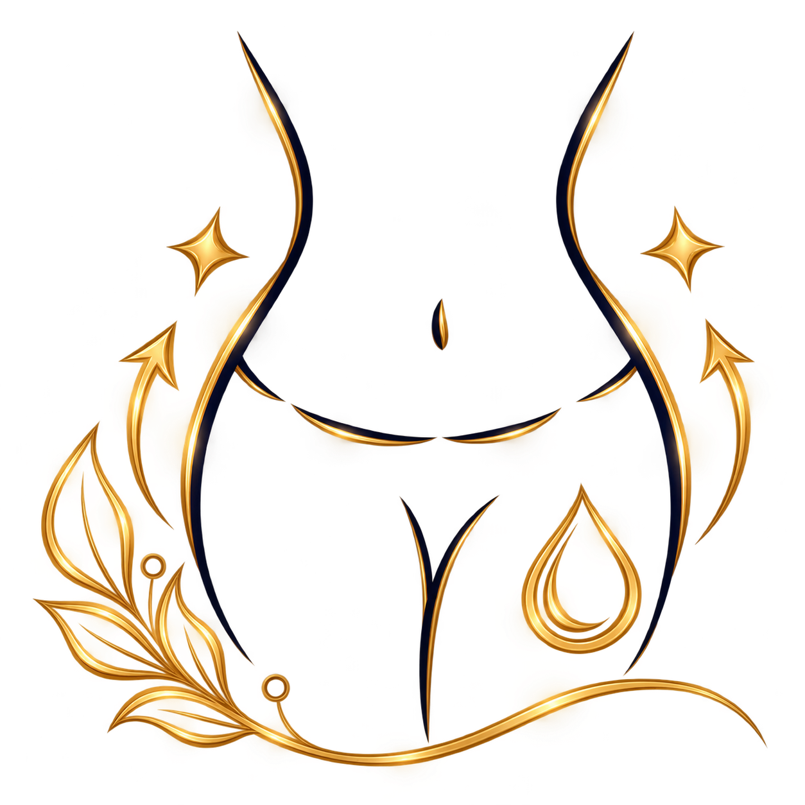
Мягкая работа по телу для ощущения лёгкости и комфорта. Интенсивность подбирается индивидуально.
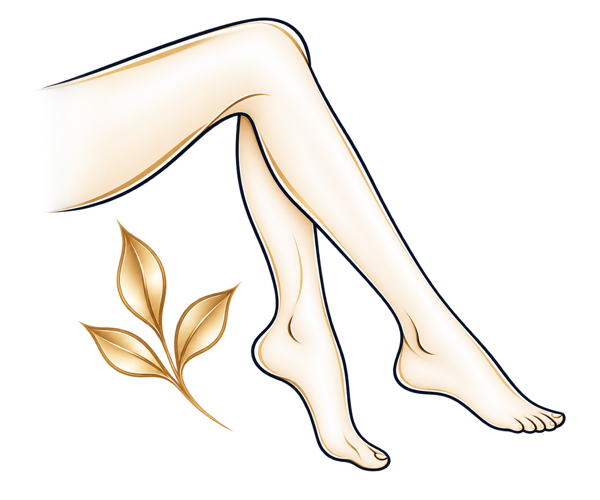
Аппаратный формат для ног, когда хочется уделить этой зоне особое внимание и почувствовать лёгкость и комфорт.
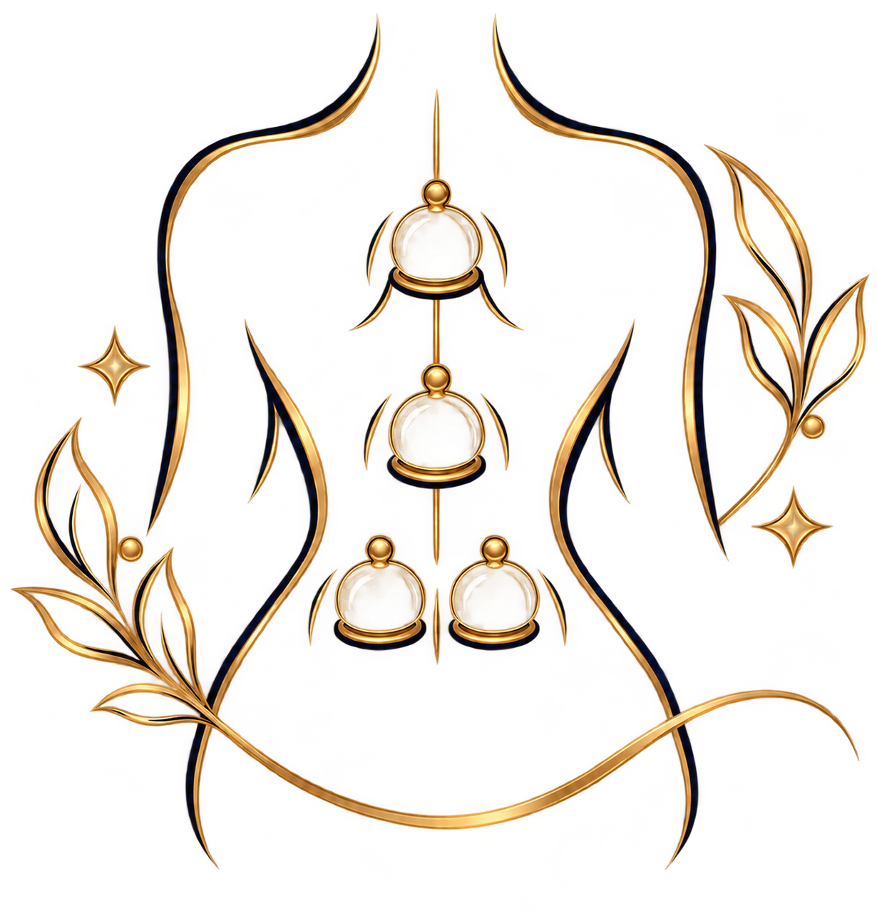
Процедура с вакуумной техникой и банками для комплексной работы с телом.
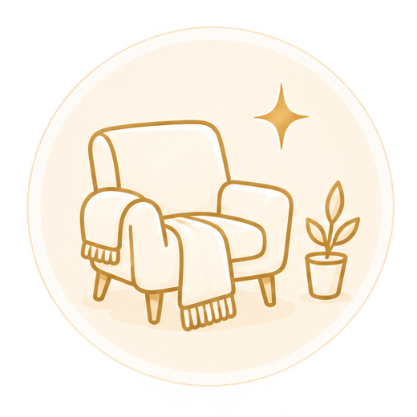
Не планируйте на вечер слишком много — позвольте себе восстановить силы и немного замедлиться.
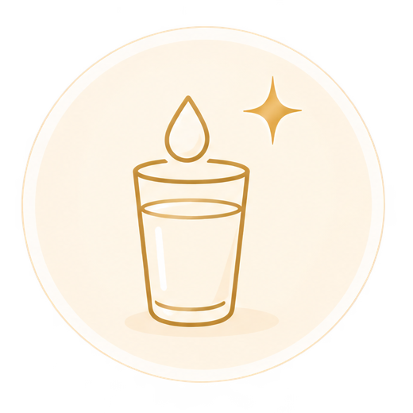
После сеанса выпейте стакан воды и в течение дня не забывайте поддерживать привычный питьевой режим.
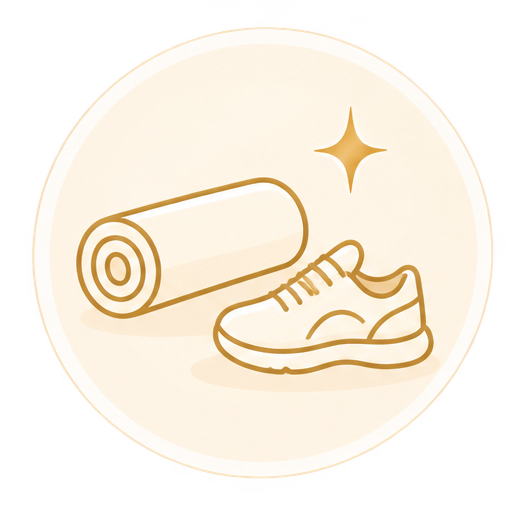
Если массаж был интенсивным, отложите серьёзную физическую нагрузку. Неспешная прогулка или лёгкая разминка могут стать приятным продолжением дня.
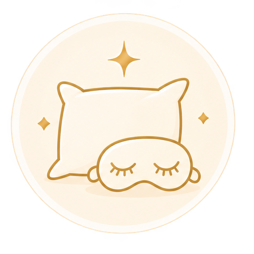
Спокойный и полноценный сон поможет завершить день в том же расслабленном ритме.
Если вы сомневаетесь, можно начать с описания процедуры и выбрать формат, который ближе по задаче. Для записи используйте онлайн-форму DIKIDI.
Да. Кнопка «Записаться онлайн» открывает страницу записи в DIKIDI.
Москва, рядом с метро Курская. Мастерская удобна для жителей и тех, кто работает в Басманном и Красносельском районах.
Запись открывается в DIKIDI.